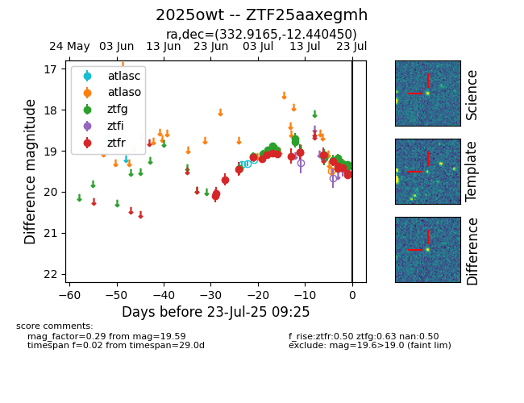

Target ZTF25aaxegmh at 2025-07-23 11:48, see:
FINK: fink-portal.org/ZTF25aaxegmh
Lasair: lasair-ztf.lsst.ac.uk/objects/ZTF25aaxegmh
ALeRCE: alerce.online/object/ZTF25aaxegmh
TNS: wis-tns.org/object/2025owt
YSE: ziggy.ucolick.org/yse/transient_detail/2025owt
alt names
ZTF25aaxegmh (ztf,fink)
2025owt (tns,yse)
coordinates:
equatorial (ra, dec) = (332.9165,-12.44045)
galactic (l, b) = (46.3579,-49.86685)
photometry
last ztfg=19.38, ztfr=19.59
20 ztfg, 19 ztfr detections
